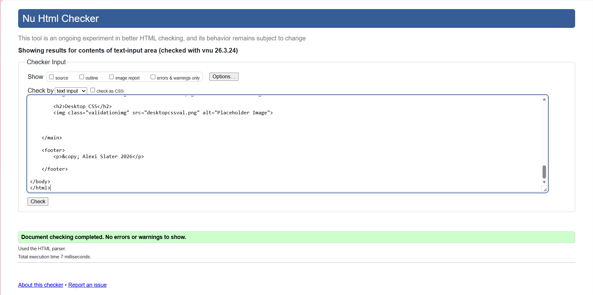
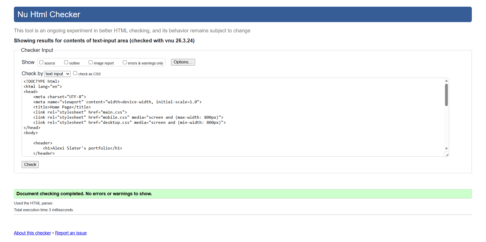
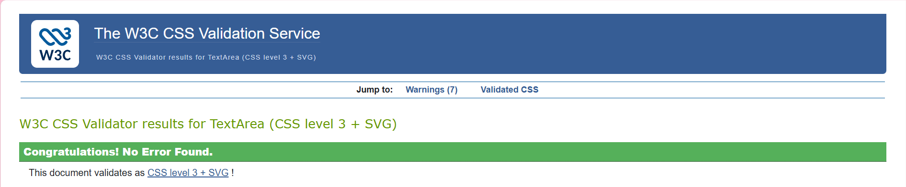
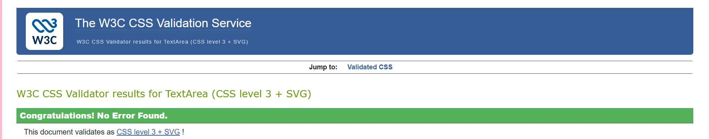
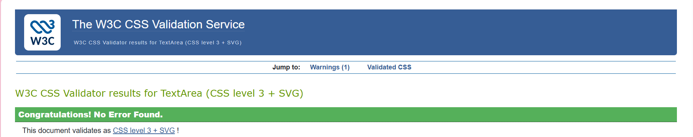

Reflective discussion of your module experience
How did I find the assignment?
I enjoyed this assignment so so much - I would say this has been the most fun I have had so far in my degree. The creative freedom with colours, fonts, images etc has been fun to mess around with. Don't get me wrong there has been some downs but the good has outweighed the bad. I may have found the industry I would like to go into.
Design decisions:
I had many design ideas for this project as this has allowed creative freedom. I decided to go with pink as the theme as not only is it my favourite colour but I wanted to take advantage of making a website that reflects me. In the top section, I created a banner of things I love, e.g. baking, reading etc. It also has an outline of a girl which I thought could represent me. I didn't really use any other website as inspiration, I just started the project and added things I thought were a good idea as I went although my thought throughout the project was that I wanted to keep it simple as I don't particulary like things too overstimulating. Regarding fonts, I tried and errored many different ones that I though would go and narrowed it down to the ones I used, again making sure not to use too many. With this there was much strategy just trial and error.
My ups and downs:
Throughout my project there were mnay ups and downs, as there is in any bit of coding. Particulary, I wanted to add a cool background that moves and is animated, however after many attempts to make this work for some reason it wouldn't. This was the biggest down I had. On a brighter note though, there have been some really good ups. As pieces of the puzzle slotted into place and the outcome on my website page started to look how I wanted it to, felt amazing.
Validation:
Index HTML

Project HTML

Report HTML

Contact HTML

Video HTML

Main CSS

Mobile CSS

Desktop CSS

Video:
The video can also be found on the video page but the URL link is below too:
View my video